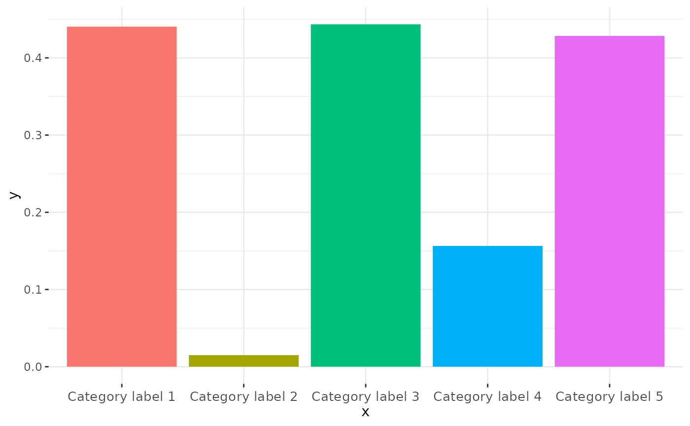
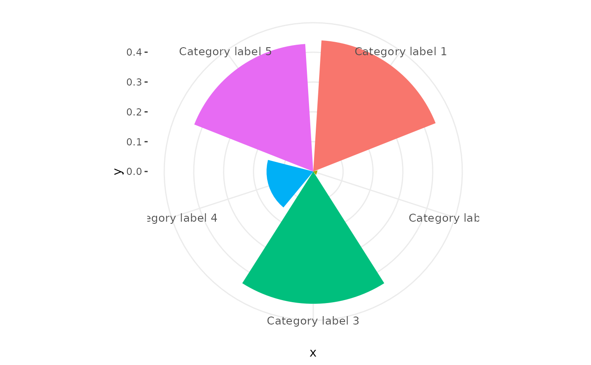
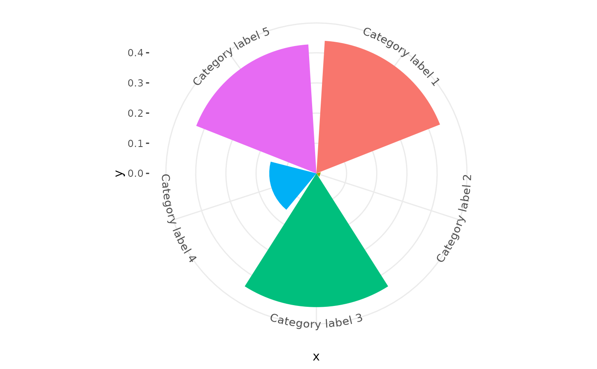

Polar co-ordinates in `ggplot2` help to create a range of circular plots, which can be used to present data in a visually appealing, user-friendly way. However, the standard `coord_polar` uses a `textGrob` to render the labels on the circumferential (theta) axis, meaning that labels do not rotate or curve in line with the axis. `coord_curvedpolar` aims to be identical to `coord_polar`, except that the text on the theta axis follows the curve of the plot, correcting automatically for resizing to preserve letter spacing and size.
Usage
coord_curvedpolar(
theta = "x",
start = 0,
direction = 1,
clip = "on",
halign = c("center")
)Arguments
- theta
variable to map angle to (`x` or `y`)
- start
Offset of starting point from 12 o'clock in radians. Offset is applied clockwise or anticlockwise depending on value of `direction`.
- direction
1, clockwise; -1, anticlockwise
- clip
Should drawing be clipped to the extent of the plot panel? A setting of `"on"` (the default) means yes, and a setting of `"off"` means no. For details, please see [`coord_cartesian()`].
- halign
A
character(1)describing how multi-line text should be justified. Can either be"center"(default),"left"or"right".
Examples
# A pie chart = stacked bar chart + polar coordinates
pie <- ggplot(mtcars, aes(x = factor(1), fill = factor(cyl))) +
geom_bar(width = 1)
pie + coord_curvedpolar(theta = "y")
# Demonstrating curved category labels
p <- ggplot(data.frame(x = paste("Category label", 1:5), y = runif(5)),
aes(x, y, fill = x)) +
geom_col() +
theme_bw() +
theme(panel.border = element_blank(),
legend.position = "none",
axis.text.x = element_text(size = 10, vjust = 0.5))
# Standard bar chart in Cartesian Co-ordinates
p

# Standard coord_polar axis labels
p + coord_polar()

# Curved polar co-ordinate labels
p + coord_curvedpolar()
